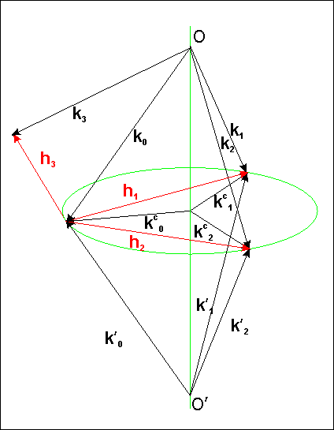

|
This page provides interface to a program called BRL which can calculate multiple Bragg diffraction of X-rays by perfect crystals. BRL is based on the paper by S.Stepanov and A.Ulyanenkov "A New Algorithm for Computation of Multiple Bragg Diffraction", Acta Cryst. (1994) A50 579-585. It can simulate up to 12-wave dynamical Bragg diffraction of X-rays from a plate-shaped crystal including the cases of X-ray waves grazing along the plate surface and Bragg angles being close to 90o.
Typically the calculations of multiple Bragg diffraction are reduced to the eigenvalue problem for a scattering matrix. If there are no grazing waves involved into the diffraction geometry so that the specular reflection effects could be neglected, then the size of the scattering matrix is 2N*2N for N-wave diffraction. Here the factor of two appears due to the two polarizations (sigma and pi) of X-rays. A description of respective theory can be found e.g. in the paper by V.G.Kohn [Phys. Stat. Sol. (a) 54, 375-384].
However, if the diffraction geometry involves an X-ray wave grazing along the crystal surface, the task becomes more complicated. For this case R.Colella [Acta Cryst. (1974) A30, 413-423] suggested a theory where the calculations of multiple Bragg diffraction are reduced to the eigenvalue problem for 4N*4N scattering matrix. This holds even if only one of e.q. 24 waves is grazing which is obviously not very effective in terms of calculations.
In the paper by S.Stepanov and A.Ulyanenkov it was made possible to reduce the calculations of multiple Bragg diffraction to a generalized eigenvalue problem for 2(N+Ns)*2(N+Ns) scattering matrix where Ns is the number of grazing waves. Thus, if there are no grazing waves, the matrix size is 2N*2N and if all of the waves are grazing it becomes 4N*4N. In some cases like only one of 24 waves is grazing the calculations are reduced dramatically.
BRL has been successfully used to simulate the applications of Bragg- and Laue-case Renninger effect to X-ray double-plane collimation and the multiple diffraction effect in X-ray surface back diffraction.

The BRL consists of two steps. At the first step one has to enter the parameters required to build incident wavevector. As one can see on Fig.1, the specification of two reflections with the reciprocal vectors h1 and h2 determines the axis OO' on which the incident wave vector k0 should originate. Then, there are the following three choices:
The other parameters on the form specify the crystal, the direction of external normal to the crystal surface, and the conditions to search for additional Bragg reflections that may simultaneously occur for given k0. Note that in principle BRL should work for crystals that belong to any syngony. However, the program has been tested cubic crystals only. Any comments on the calculations for non-cubic crystals will be greatly appreciated. The crystal code refers to respective record in the X0h database.
Once the form is submitted, X-ray Server validates the input and attempts to build k0. If everything is found to be correct and in particular it is ensured that k0 can enter the crystal (i.e. it makes an obtuse angle with the external surface normal), one proceeds to the Step-2. Otherwise, an error is reported.
At Step-2 one has to enter the crystal plate thickness, the incident X-ray polarization, and the scan parameters. In terms of the incidence wave polarization, the program offers the following three options:
In the above selections vectors pi0 and sigma0 refer to the internal decomposition of electric fields in the program, which is: sigmai ~ [ki*surface_normal] and pii ~ [sigmai*ki]. There is one exception when ki is parallel to surface_normal. Then, the program chooses sigmai ~ [ki*[h1*h2]].
In terms of angular scanning input, obviously, one can rotate vector k0 with respect to crystal (or crystal with respect to k0) in two directions. Respectively, the form asks for the range of rotation over the two angles, Theta1 and Theta2 counted along two unit vectors u1 and u2 orthogonal to k0. The unit vector u2 can be selected either along the incidence wave polarization vector sigma0, or [k0*surface_normal], or [k0*h1]. Then, the unit vector u1 is always along [k0*u2], i.e. perpendicular to the two. One can request either one-dimensional scans or 2D-scans.
If both "mirrored" k0 and k'0 were found to be able entering the crystal, the form provides a control for choosing one of the two.
The submission of Step-2 form initiates the BRL. If no error is found in the input, the calculation starts and the result is returned as an HTML page containing data plot and a link to zipped data.
In the case when the number of scan points over either Theta1 or Theta2 is one, the data are written into the .DAT files (one per reflection) with the format:
x1, y1 x2, y2 .... xn, yn
Otherwise the .GRD files are produced which are the matrix files compatible with the Golden Software Surfer. These files can be used with GnuPlot too, after removing the first 3 header lines.
Click here to proceed to the BRL input form.
|
Please, report problems and send comments to
|
|---|---|
|